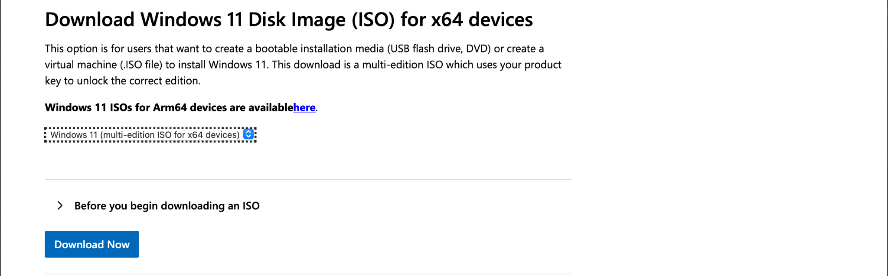

Préparation à l’installation d’un système
Préparer méthodiquement un ordinateur avant l’installation d’un système d’exploitation afin de vérifier sa compatibilité, protéger les données existantes et disposer d’un support d’installation fiable.
1. Qu’est-ce que la préparation à l’installation ?
Définition
La préparation à l’installation regroupe toutes les vérifications et opérations réalisées avant l’installation d’un système d’exploitation. Elle permet de déterminer si l’ordinateur peut accueillir le système choisi et de préparer les ressources nécessaires à l’installation.
Une installation ne commence donc pas au moment où l’on clique sur « Installer ». Elle commence par une phase de planification : identifier la machine, vérifier sa configuration, protéger les données, choisir le système approprié et préparer le support d’installation.
Exemple
Avant d’installer Windows ou une distribution Linux sur un ordinateur, le technicien vérifie notamment le processeur, la mémoire RAM, le stockage disponible, le mode de démarrage, les données à conserver et le support USB qui servira à lancer l’installation.
2. Identifier le besoin et le système à installer
La première étape consiste à déterminer pourquoi un système doit être installé et quel système répond au besoin. Le choix peut dépendre du contexte d’utilisation, des applications nécessaires, du matériel disponible et des politiques de l’organisation.
| Question | Pourquoi la poser ? |
|---|---|
| Quel système doit être installé ? | Déterminer la famille du système : Windows, Linux ou autre système compatible. |
| Quelle version ou édition ? | Vérifier les fonctionnalités, la compatibilité et les exigences propres à la version choisie. |
| Quel est l’usage du poste ? | Adapter le système aux besoins : bureautique, développement, laboratoire, serveur, etc. |
| Quelles applications seront utilisées ? | Vérifier qu’elles sont compatibles avec le système et l’architecture prévus. |
| Faut-il conserver les données existantes ? | Déterminer la stratégie de sauvegarde et le type d’installation à envisager. |
3. Vérifier la configuration matérielle
Un système d’exploitation possède des prérequis matériels. Ce sont les caractéristiques minimales ou recommandées que l’ordinateur doit respecter pour permettre l’installation et l’utilisation du système.
| Élément | Vérification | Pourquoi ? |
|---|---|---|
| Processeur (CPU) | Architecture, génération et caractéristiques requises. | Le système doit pouvoir exécuter ses instructions sur le processeur. |
| Mémoire RAM | Quantité installée par rapport aux exigences du système. | Une quantité insuffisante peut empêcher l’installation ou dégrader fortement l’utilisation. |
| Stockage | Capacité totale et espace disponible. | Le système et ses mises à jour nécessitent suffisamment d’espace. |
| Graphique / affichage | Compatibilité avec les exigences graphiques du système. | Certaines interfaces et fonctions dépendent du matériel graphique. |
| Firmware | Mode BIOS/UEFI et options nécessaires. | Le mode de démarrage influence la préparation et l’installation. |
| Périphériques | Disponibilité de pilotes compatibles. | Le réseau, l’audio, l’affichage ou d’autres périphériques doivent fonctionner après l’installation. |
4. Vérifier l’architecture du système : 64 bits
Définition
L’architecture indique notamment le type d’environnement pour lequel le système et le processeur sont conçus. Les ordinateurs personnels modernes utilisent principalement des systèmes 64 bits.
Avant de télécharger un système, il faut vérifier que l’image d’installation choisie correspond à l’architecture prise en charge par la machine et à la version du système que l’on souhaite déployer.
Exemple
Si le système choisi est distribué sous la forme d’une image 64 bits, le technicien vérifie que le processeur et la plateforme sont compatibles avant de préparer la clé USB d’installation.
5. Vérifier le firmware et le mode de démarrage
Le firmware est le logiciel de bas niveau qui initialise le matériel et participe au démarrage de l’ordinateur. Deux environnements sont couramment rencontrés : BIOS et UEFI.
Sur les ordinateurs modernes, UEFI est couramment utilisé. Avant l’installation, il faut vérifier le mode de démarrage actif et certaines options susceptibles d’influencer le lancement du support d’installation.
| Vérification | Question à poser |
|---|---|
| Mode de démarrage | La machine utilise-t-elle UEFI ou un mode hérité ? |
| Ordre de démarrage | Le support USB peut-il être sélectionné au démarrage ? |
| Secure Boot | Le système et le support prévus sont-ils compatibles avec la configuration de démarrage sécurisé ? |
| Stockage détecté | Le disque cible apparaît-il correctement dans le firmware ? |
6. Protéger les données avant l’installation
Une installation peut entraîner la suppression de partitions, le formatage d’un volume ou le remplacement d’un système existant. Les données importantes doivent donc être identifiées et sauvegardées sur un autre support avant toute opération potentiellement destructive.
Données à vérifier
La sauvegarde peut concerner les documents personnels, les projets, les fichiers de travail, les paramètres importants, les données d’applications et toute autre information que l’utilisateur ne peut pas perdre.
Vérifier la sauvegarde
Copier des fichiers ne suffit pas : il faut vérifier que la sauvegarde est accessible et que les fichiers essentiels peuvent réellement être ouverts depuis le support de sauvegarde.
7. Examiner le disque et préparer l’espace d’installation
Avant l’installation, il faut identifier précisément le disque cible, sa capacité, son organisation actuelle et l’espace disponible. Cette vérification permet d’éviter de modifier le mauvais support.
Points à examiner
- nombre de disques présents dans l’ordinateur;
- capacité et type de chaque disque;
- partitions existantes;
- données ou systèmes à conserver;
- espace disponible pour le nouveau système;
- schéma de partitionnement approprié au contexte d’installation.
8. Image ISO et fichiers d’installation
Définition
Une image ISO est un fichier qui représente le contenu d’un support d’installation. Les éditeurs de systèmes d’exploitation peuvent fournir leurs images d’installation sous ce format.
Téléchargement
L’image doit provenir d’une source officielle ou fiable. Il faut choisir la bonne version, l’édition appropriée, la langue souhaitée et l’architecture compatible avec l’ordinateur.
Téléchargement officiel des images d’installation
Pour réduire les risques liés à une image modifiée, corrompue ou provenant d’une source non fiable, utilisez en priorité les pages officielles de l’éditeur.
| Système | Page officielle | Utilisation |
|---|---|---|
| Windows 11 | Télécharger Windows 11 — Microsoft | La page Microsoft permet notamment de télécharger l’image disque ISO de Windows 11 pour les appareils x64 et propose aussi l’outil de création de média. |
| Ubuntu Desktop | Télécharger Ubuntu Desktop — Ubuntu | La page officielle Ubuntu permet de télécharger l’image d’installation d’Ubuntu Desktop. |
Windows 11 — procédure

- Ouvrez la page officielle de téléchargement de Windows 11.
- Repérez la section consacrée au téléchargement de l’image disque Windows 11 (ISO).
- Sélectionnez l’édition proposée, puis la langue souhaitée.
- Téléchargez l’image correspondant à l’architecture de la machine.
- Conservez le fichier ISO pour créer ensuite le support USB amorçable.
Ubuntu Desktop — procédure
- Ouvrez la page officielle Download Ubuntu Desktop.
- Identifiez la version d’Ubuntu Desktop que vous souhaitez utiliser pour le laboratoire.
- Lancez le téléchargement de l’image ISO.
- Conservez le fichier téléchargé afin de créer le support USB amorçable ou de l’utiliser dans une machine virtuelle.
Vérification de l’intégrité
Lorsqu’une somme de contrôle est publiée, elle peut être utilisée pour vérifier l’intégrité du fichier téléchargé. Une somme de contrôle est une valeur calculée à partir d’un fichier; comparer la valeur obtenue avec celle publiée permet de détecter une modification ou une corruption du téléchargement.
9. Créer un support USB amorçable
Définition
Un support amorçable (bootable) est un support à partir duquel l’ordinateur peut démarrer afin de lancer un environnement d’installation ou de maintenance.
Copier simplement le fichier ISO sur une clé USB ne suffit généralement pas. Un outil de création de média prépare la clé pour qu’elle puisse être utilisée au démarrage.
Méthode générale
- Préparer une clé USB dont les données peuvent être effacées.
- Télécharger l’image d’installation ou utiliser l’outil officiel de création de média.
- Lancer l’outil choisi.
- Sélectionner soigneusement la clé USB cible.
- Choisir l’image ISO et les paramètres adaptés au système.
- Lancer la création du support.
- Attendre la fin de l’opération et vérifier qu’aucune erreur n’est signalée.
10. Démarrer sur le support d’installation
Une fois le support préparé, l’ordinateur doit démarrer sur celui-ci plutôt que sur le système déjà présent sur le disque interne.
Deux approches courantes
Selon l’ordinateur, il est possible d’utiliser un menu de démarrage temporaire pour choisir la clé USB ou de modifier l’ordre de démarrage dans le firmware. La touche permettant d’ouvrir le menu varie selon le fabricant.
Vérification
Le support doit apparaître dans la liste des périphériques de démarrage. S’il n’apparaît pas, il faut vérifier la clé, le port USB, la création du média et la configuration UEFI/BIOS avant de poursuivre.
11. Préparer les pilotes, le réseau et les ressources nécessaires
Après l’installation, certains composants peuvent nécessiter un pilote, c’est-à-dire un logiciel permettant au système d’exploitation de communiquer correctement avec le matériel.
Avant une installation importante, il est utile de vérifier la disponibilité des pilotes essentiels, notamment pour le réseau et le stockage. Si la connexion réseau n’est pas immédiatement disponible après l’installation, disposer à l’avance du pilote approprié peut faciliter la configuration du poste.
Autres ressources à prévoir
Selon le contexte, le technicien peut également préparer les informations de licence, les identifiants nécessaires, les paramètres réseau, la liste des applications à réinstaller et les fichiers de configuration utiles.
12. Choisir le type d’installation
Le type d’installation dépend de l’objectif poursuivi. Il faut distinguer une installation destinée à conserver autant que possible l’environnement existant d’une installation qui repart d’un espace préparé pour un nouveau système.
| Approche | Principe général | Préparation importante |
|---|---|---|
| Mise à niveau | Faire évoluer un système existant lorsqu’un chemin de mise à niveau compatible est prévu. | Vérifier la compatibilité des applications, des pilotes, de la version actuelle et sauvegarder les données. |
| Installation propre | Installer un nouveau système sur un espace préparé, sans dépendre de l’ancienne installation. | Sauvegarder les données, préparer le disque et prévoir la réinstallation des applications. |
| Installation parallèle | Faire coexister plusieurs systèmes sur une même machine lorsque la configuration le permet. | Planifier les partitions et le démarrage avec une attention particulière. |
13. Liste de vérification avant installation
Avant de lancer réellement l’installation, le technicien doit effectuer une dernière vérification. Cette étape permet de confirmer que les conditions nécessaires sont réunies.
| Élément | Vérification finale |
|---|---|
| Système | Version, édition, langue et architecture correctement choisies. |
| Matériel | CPU, RAM, stockage et autres exigences vérifiés. |
| Données | Sauvegarde terminée et fichiers essentiels contrôlés. |
| Disque cible | Disque et partitions correctement identifiés. |
| Support | Clé USB amorçable créée et reconnue. |
| Firmware | Mode de démarrage et paramètres pertinents vérifiés. |
| Pilotes | Pilotes essentiels disponibles si nécessaire. |
| Ressources | Licence, réseau, comptes et informations nécessaires préparés selon le contexte. |
Mise en situation — Préparer un ordinateur pour une nouvelle installation
Un utilisateur vous confie un ordinateur contenant un ancien système, 8 Go de RAM, un SSD de 512 Go et plusieurs dossiers personnels. Il souhaite installer un nouveau système et conserver ses documents.
- Quelles informations devez-vous recueillir auprès de l’utilisateur ?
- Quelles caractéristiques matérielles devez-vous vérifier ?
- Que devez-vous faire des données personnelles avant l’installation ?
- Comment vérifiez-vous que l’image d’installation choisie est appropriée ?
- Comment préparez-vous le support USB ?
- Quelles vérifications effectuez-vous dans le firmware ou le menu de démarrage ?
- Quels pilotes ou renseignements serait-il utile de préparer à l’avance ?
- Quelles vérifications finales réalisez-vous avant de lancer l’installation ?
Activité de synthèse
Préparez un plan d’installation pour un poste informatique fictif. Votre document doit présenter :
- le besoin de l’utilisateur et le système choisi;
- la vérification des prérequis matériels;
- la stratégie de sauvegarde;
- l’identification du disque cible;
- la source et les caractéristiques de l’image ISO;
- la méthode de création du support USB amorçable;
- les vérifications UEFI/BIOS nécessaires;
- les ressources et pilotes à préparer;
- une checklist finale avant installation.
Quiz — Préparation à l’installation d’un système
Vérifiez votre compréhension des notions essentielles de la leçon. Sélectionnez une réponse par question, puis cliquez sur Corriger le quiz.
1. Quelle opération doit être réalisée avant toute modification potentiellement destructive d’un disque contenant des données importantes ?
2. Pourquoi faut-il vérifier les prérequis matériels avant l’installation ?
3. Qu’est-ce qu’une image ISO dans le contexte de cette leçon ?
4. Quelle source la leçon recommande-t-elle en priorité pour télécharger une image d’installation ?
5. À quoi sert une somme de contrôle lorsqu’elle est publiée avec une image ISO ?
6. Copier simplement un fichier ISO sur une clé USB suffit-il généralement à rendre la clé amorçable ?
7. La clé USB amorçable est correctement créée, mais l’ordinateur démarre toujours sur l’ancien système. Quelle vérification est pertinente ?
8. Un ordinateur possède un SSD de 512 Go et un HDD de 2 To. Quelle précaution est essentielle avant de lancer l’installation ?
9. Pourquoi peut-il être utile de préparer le pilote de la carte réseau avant une réinstallation complète ?
10. Une organisation souhaite repartir sur un environnement propre à cause de nombreux problèmes logiciels. Quelle approche décrite dans la leçon correspond à cet objectif ?